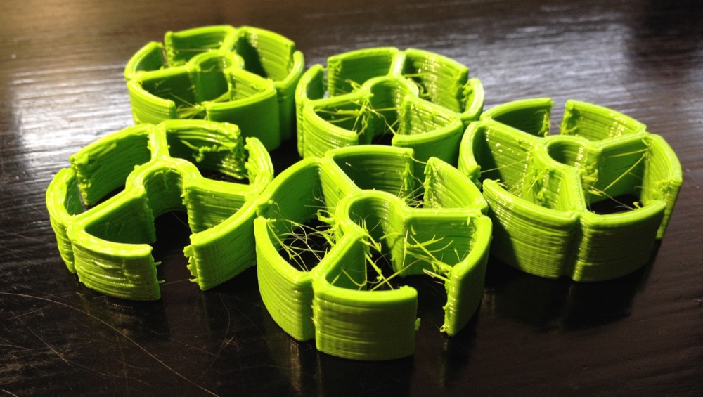
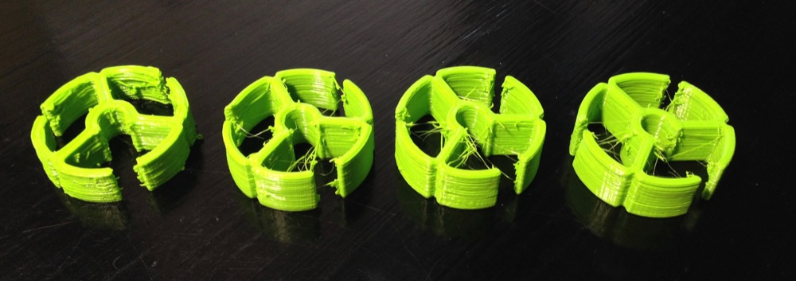
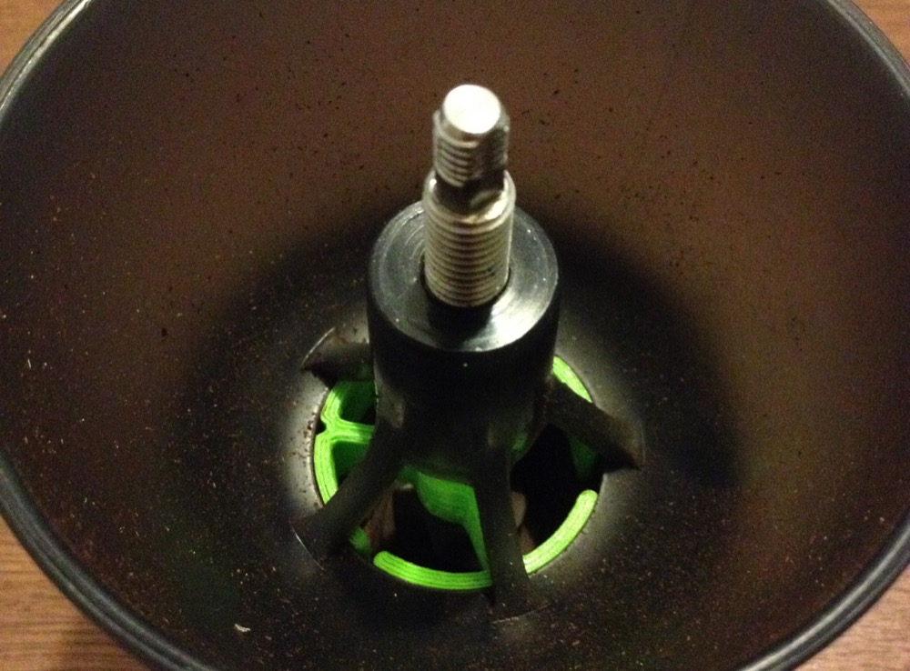

3D printed bearing for coffee grinder

I am a coffee person. I enjoy good coffee and I do things for it. Today I 3D printed a bearing for my coffee grinder Hario Skerton in order to produce more consistent grind.
I have access to my school’s printer (MakerFarm 6” Prusa i3). I had printed once before this. I used Repetier Host with Slic3r.
The model I got from this Reddit thread. There is STL and Solidworks files available. I had to fix the STL file with Slic3r (it was non-manifold) before Repetier Host accepted it.
First print was not good. The walls were very coarse and ugly. I stopped printing and sliced again with smaller extrusion multiplier (from 1.2 to 1.05) and lower extrusion temperature (205 -> 200 °C). The result was much better, though the walls were melting and falling inwards.
The third one I got right. I increased layer height to 0.4 mm and the result was good.

First print on the left
At first the bearing was a bit too tight when installed on place. After a little sanding, the fit was perfect.

The bearing installed
So, how is the grind?
I haven’t done any actual comparing tests but there is notably less wobble in the grinder. I was happy with the grind without the bearing, I just thought this was a cool project to do! :)